地政学
デトロイトは五大湖から大西洋へ出る水路と、川向こうのカナダを同時に見る国境都市である。橋、トンネル、税関、工場物流が日常の背後で動き、アメリカ中西部とオンタリオの産業圏を結ぶ。川は境界で通路でもある。

🇺🇸 アメリカ合衆国 / ミシガン州 / World City Atlas
五大湖の水路とカナダ国境に面し、世界の自動車産業、労働運動、黒人移住、モータウン音楽、住宅空洞化、再生投資が重なった都市。栄光と破綻の物語だけでなく、働く人、祈る人、修理し続ける地区の現在から読む街です。
都市の骨格
デトロイトは、アメリカ北部の工業都市という一語では収まらない。川向こうのウィンザー、五大湖の物流、自動車の分業、郊外化、黒人コミュニティ、音楽と壁画が、傷と再生を同時に見せる。
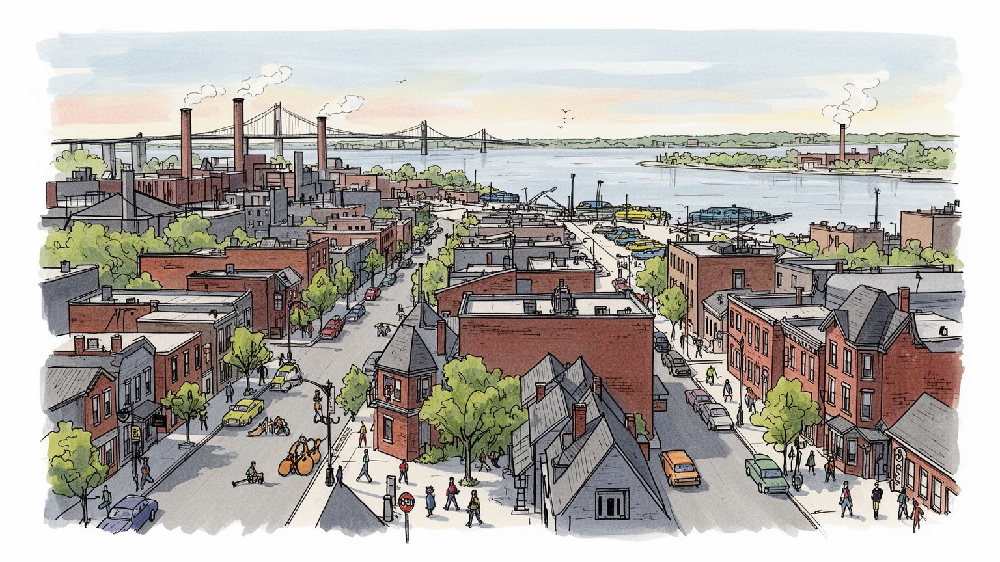
デトロイトは五大湖から大西洋へ出る水路と、川向こうのカナダを同時に見る国境都市である。橋、トンネル、税関、工場物流が日常の背後で動き、アメリカ中西部とオンタリオの産業圏を結ぶ。川は境界で通路でもある。
自動車産業はデトロイトの誇りであり、同時に解雇、組合交渉、自動化、郊外移転の記憶でもある。大手メーカー、部品会社、医療、金融、物流が雇用を支え、現場労働の賃金が地域の暮らしを動かす。工場の音が街を作った。
モータウン、ゴスペル、ジャズ、ヒップホップ、教会、壁画、黒人史は、デトロイトを産業統計以上の都市にする。大移住の家族史、日曜礼拝、クラブ、レコード会社、街角の表現が、困難を記憶へ変える文化を育てた。
旅行者は川辺、博物館、音楽遺産、壁画、球場、復元された工場建築を巡るが、住民は空き家、交通、学校、治安、税負担、冬の寒さと向き合う。再生した中心部と傷んだ街区の差を見る必要がある。観光の外側にも生活がある
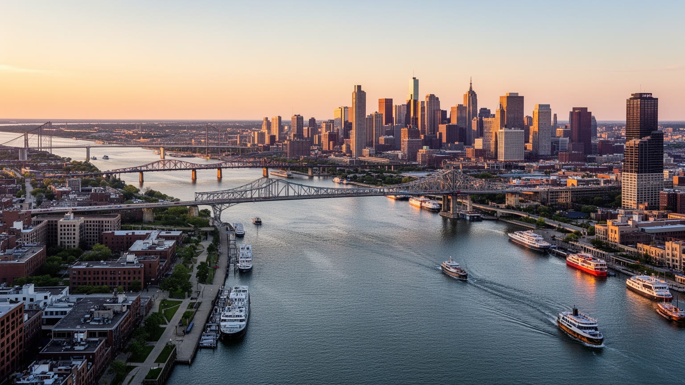
デトロイトを読む入口は、都市名の由来でもある川の狭い水路である。デトロイト川はエリー湖とセントクレア湖を結び、五大湖の内陸水運を大西洋側へ開く通路として機能してきた。市街地の南側にはカナダのウィンザーがあり、川は国境でありながら、通勤、貨物、家族、観光を結ぶ近い隣人でもある。アンバサダー橋と国境トンネルは、完成車、部品、農産物、日用品を動かし、税関の遅れや政策変更は工場の稼働に直結する。川辺には公園や遊歩道が整えられ、かつて工業用地が占めた水際を市民へ戻す試みも進む。ただし、その眺めの背後には、製鉄、造船、倉庫、汚染、洪水、国境管理の歴史がある。対岸を見れば別の国家が見えるという感覚は、デトロイトを内陸都市の閉じた物語から引き離す。ここでは水が境界線を引くと同時に、経済を越境させる。川沿いを歩くと、工業都市の重い過去、国際物流の現在、住民が水辺を取り戻す未来が一つの景観に重なる。水質改善や河岸再生は、過去の負債を消す作業ではなく、働く水辺を暮らしの場所へ戻す長い交渉でもある。釣り人、散歩する家族、税関へ向かうトラックが同じ視界に入ることも、この街の地理の特徴である。島や河岸の湿地も、都市の環境を支える小さな余白である。デトロイトは川を背にした都市ではなく、川を正面にして世界へ接続してきた都市である。
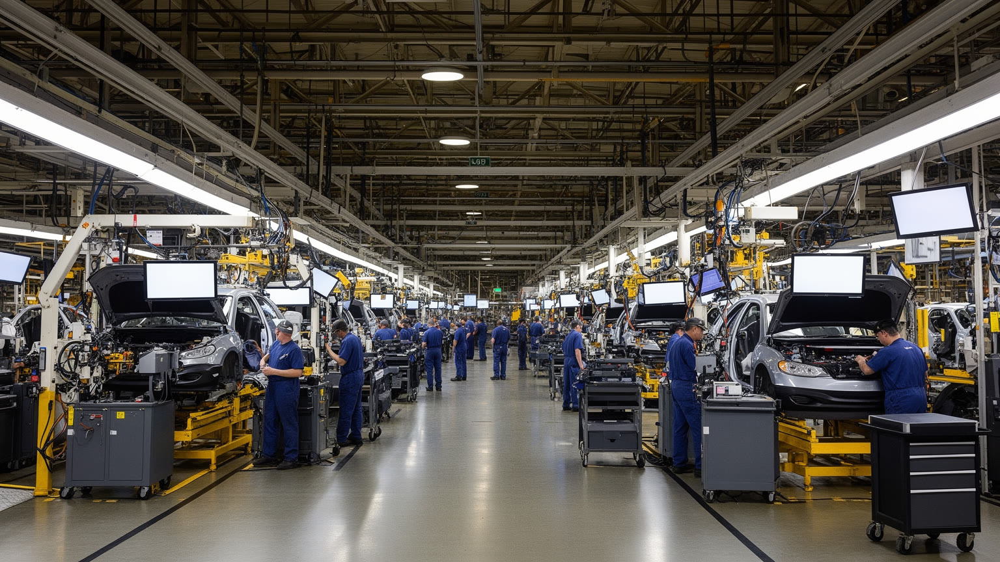
デトロイトの近代史は、自動車なしには語れない。フォード、ゼネラルモーターズ、クライスラーを中心に、組立ライン、部品工場、設計、販売金融、広告、道路、郊外住宅が一つの産業生態系を作った。二十世紀の自動車は、アメリカの大量生産と中産階級の象徴であり、デトロイトはその心臓部だった。工場の賃金は労働者に住宅、車、教育、消費の機会を与え、南部や海外から来た人々を吸収した。一方で、自動車依存は都市の脆さも作った。石油危機、海外競争、自動化、工場閉鎖、郊外移転、金融危機は、仕事と税収を市内から奪い、空き家と失業を広げた。現在の自動車産業は電動化、電池、ソフトウェア、自動運転へ向かい、従来の組立技能だけでは足りない。研究施設や郊外の本社機能が成長しても、市内の住民へ安定した仕事が届くとは限らない。デトロイトの自動車を読むには、展示車や企業ロゴだけでなく、工場門、通勤道路、下請け、失われたシフト、再教育を見なければならない。電池工場や試験施設の投資は希望だが、技能訓練、交通、住宅が伴わなければ雇用の扉は狭い。部品会社の小さな判断も、地域の食堂や学校区の収入へ波及する。車はこの都市に富をもたらし、同時に都市構造を外へ広げすぎた。その両面を理解して初めて、デトロイトがなぜ世界的な産業都市であり続けるのかが見えてくる。
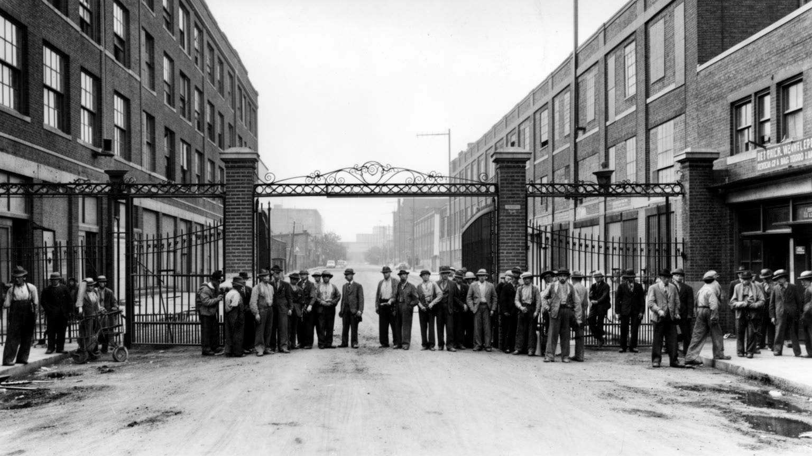
デトロイトの労働史は、アメリカの中産階級がどのように作られ、どのように揺らいだかを示している。自動車工場の組立ラインは高い生産性を生んだが、単調で危険な作業、長時間労働、差別、解雇の不安も抱えていた。全米自動車労働組合を中心とする組織化は、賃金、医療保険、年金、安全、休暇、昇進をめぐる交渉を通じて、工場労働を家族を養える仕事へ近づけた。シットダウンストライキや団体交渉の記憶は、単なる労使対立ではなく、都市の住宅、学校、商店、教会を支える所得をめぐる闘いだった。黒人労働者や女性労働者は、工場の中でも差別と職種分離に直面し、組合内部でも平等を求め続けた。グローバル競争と自動化が進むと、組合の力は以前ほど単純ではなくなり、雇用維持と賃金、企業の投資先、臨時雇用の扱いが厳しい争点になる。デトロイトでは、労働運動の成果が街の誇りである一方、失われた工場が空き地として残る。交渉の結果は組合員だけでなく、食堂、理髪店、学校寄付、住宅ローンまで波及した。ストのニュースは、家庭の食費や車の支払いにも直結する身近な政治だった。退職者の年金も地域経済を支えた。労働組合を読むことは、古い産業のノスタルジーではない。新しい電動車工場、物流倉庫、医療現場、サービス業で働く人が、どのような賃金と尊厳を得られるのかという現在の問題である。
デトロイトの文化的な名を世界へ広げたのがモータウンである。小さな録音スタジオから生まれた歌は、洗練されたポップスでありながら、黒人コミュニティの経験、教会の歌声、街のダンス、若者の夢を背負っていた。モータウンは人種隔離がまだ強かった時代に、黒人アーティストを全国のラジオとテレビへ送り出し、アメリカの大衆文化の音を変えた。スタジオの成功は、作曲家、演奏者、歌手、衣装、振付、マネジメント、流通が一体になった都市の創造産業でもあった。デトロイトにはジャズ、ブルース、ゴスペル、ロック、テクノ、ヒップホップの層も厚く、音楽は工場のリズムや教会の礼拝、移住者の記憶と結びついている。観光客にとってモータウン博物館は名所だが、住民にとって音楽は成功の記念品だけではない。失業、差別、暴動、家族の移動、地区の衰退を語るための言葉でもある。クラブや教会、ラジオ、家のステレオから流れた音は、街の痛みを単純に癒すのではなく、共有できる形へ変えた。音楽学校や小さな会場、教会の聖歌隊は、次の世代が街の声を受け取る場所でもある。古い曲が今も店先や車内で流れることは、都市の記憶が日常に残る証拠だ。デトロイトを歩くと、工場都市と音楽都市が別物ではないことが分かる。機械の反復、日曜の合唱、夜のダンスフロアが、この街の身体的なリズムを作ってきたのである。
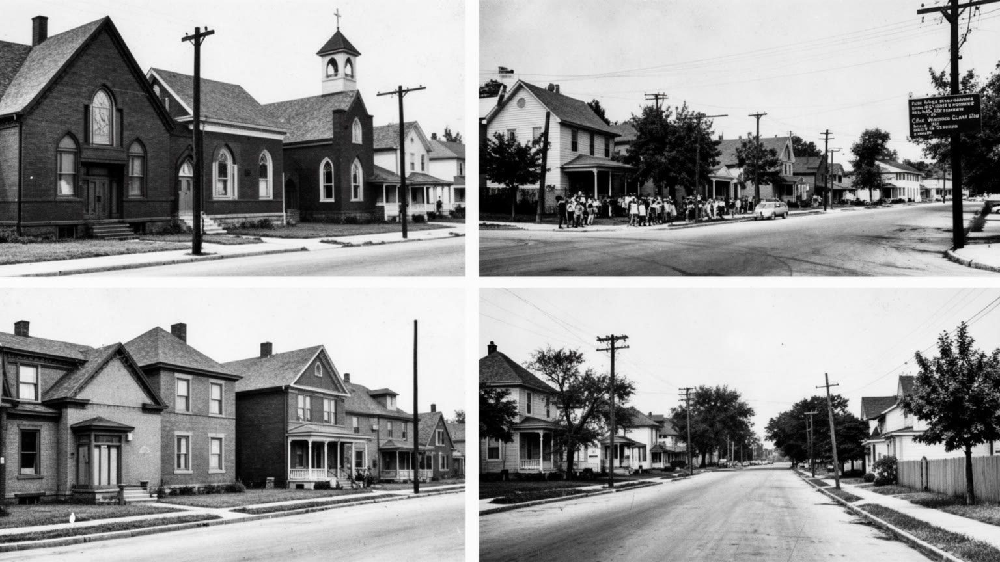
デトロイトの黒人史は、二十世紀のアメリカ都市史そのものに近い。南部の農村や人種差別から逃れ、工場の仕事と自由を求めて多くの黒人が北へ移動した大移住は、デトロイトの人口、音楽、政治、信仰、商業を大きく変えた。自動車工場は収入の可能性を開いたが、住宅差別、赤線引き、学校分離、警察暴力、職場差別は都市の中に深い境界を作った。黒人教会は礼拝の場であると同時に、相互扶助、政治組織、教育、葬儀、音楽の中心であり、困難の中でコミュニティを支えた。十二番街の暴動として記憶される一九六七年の反乱は、単なる治安事件ではなく、雇用、住宅、警察、政治代表をめぐる長い不満の爆発だった。白人の郊外流出と産業縮小が進むと、市内の黒人住民は税収減、公共サービス悪化、空き家、学校の苦境を強く背負わされた。それでも、デトロイトの黒人コミュニティは市政、芸術、起業、教育、地域菜園、住宅修復を通じて街を作り続けている。家族写真、理髪店、葬儀場、新聞、ラジオ局にも移住の記憶は残る。博物館だけでなく、通りの名前や教会の掲示にも闘いの痕跡がある。黒人史を読むことは、被害だけを数えることではない。移住してきた家族が、歌い、働き、祈り、抗議し、住まいを守った蓄積を都市の中心に置くことである。デトロイトの現在は、その歴史を抜きに理解できない。
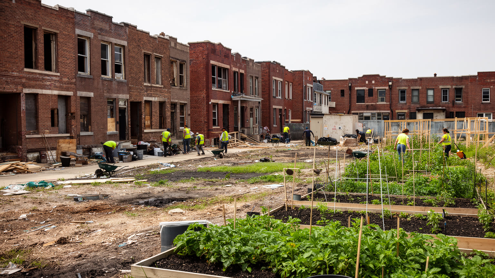
デトロイトの住宅問題は、都市の衰退を最も見えやすく示す。かつて労働者の家族が密に暮らした街区には、差し押さえ、放火、解体、空き地化を経た区画が点在する。人口減少と税収不足は道路、街灯、警察、消防、学校の維持を難しくし、残った住民ほど公共サービスの不足を強く感じた。空き家は犯罪や火災の不安を生む一方、安い土地は都市農業、芸術活動、住宅修復、小規模な起業の余地にもなる。ここで重要なのは、空洞化を廃墟の美学として消費しないことである。写真に映る壊れた家の隣には、雪かきをし、子どもを学校へ送り、庭を整え、近所を見守る住民がいる。住宅危機の背景には、産業の縮小だけでなく、住宅ローン差別、郊外化、人種隔離、固定資産税、自治体財政の破綻がある。近年は解体、土地銀行、住宅補修、移住者の流入、投資家による購入が進むが、再生は均一ではない。中心部や人気地区の地価が上がる一方、周辺街区では水道料金、保険、移動手段、買物の不便が残る。ブロック単位の自治会や非営利団体は、草刈り、見回り、補修相談を地道に続ける。子どもにとっては、空き地が危険な場所にも遊び場にもなり得る。デトロイトの住宅を読むとは、空き地の数だけでなく、誰が住み続けられ、誰が修復の利益を得るのかを見ることである。住まいはこの都市の痛みであり、再生の最前線でもある。
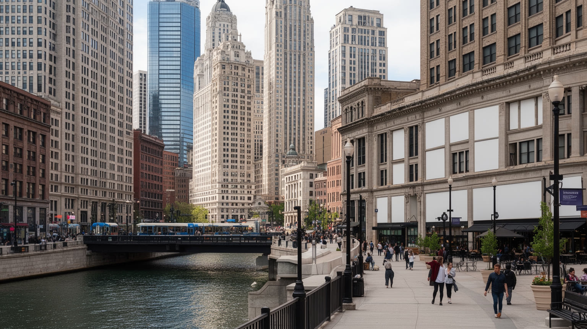
近年のデトロイトで最も目立つ変化は、ダウンタウンとミッドタウンの再投資である。歴史的なオフィスビルの改修、ホテル、レストラン、球場、アリーナ、川辺の整備、大学と医療機関の拡張が、破綻都市という外部のイメージを塗り替えてきた。空いていた建物に新しい企業や住民が入り、歩道に人が戻ることは大きな前進である。観光客も中心部の治安や移動のしやすさを以前より感じやすくなった。しかし、再生の光は都市全体へ均等には届かない。投資が集中する地区では家賃が上がり、低所得の住民や古い小商店が押し出される懸念がある。郊外から通う来訪者が中心部で消費しても、周辺の住宅街の学校、公共交通、水道、雇用へ十分に還元されるとは限らない。デトロイトの再生を評価するには、新しいビルやイベントの数だけでなく、地元雇用、住宅の手頃さ、黒人経営の店、公共空間、バス路線への効果を見る必要がある。路面電車や自転車道が便利になっても、広い市域で車を持たない人の移動はなお厳しい。中心部は都市の顔であり、顔が明るくなることには意味がある。ただし、顔だけが整って体が疲れたままでは、都市の回復とは言えない。デトロイトの課題は、ダウンタウンの勢いを、長く住み続けてきた街区の暮らしへどう接続するかである。その接続に成功したとき、再生は宣伝文句を超えて都市の力になる。
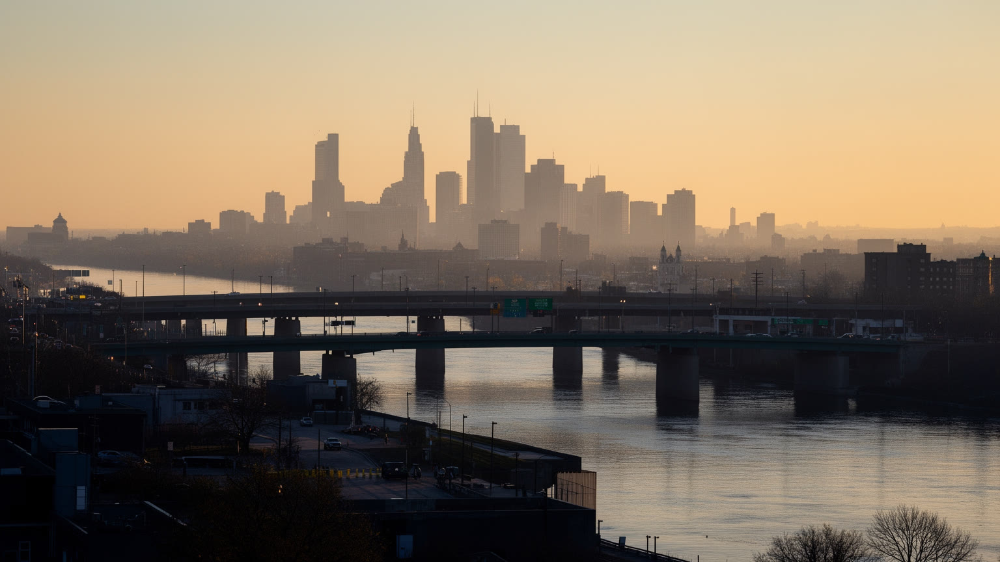
デトロイトでは、国境が遠い辺境ではなく、ダウンタウンのすぐ向こうに見える日常の風景である。川を隔てたウィンザーはカナダの都市であり、夜景、学校、親族、買物、仕事、スポーツ観戦を通じてデトロイトと結びつく。アンバサダー橋とトンネルは、観光客だけでなく、北米自動車産業の部品を運ぶトラックにとって不可欠な通路である。エンジン部品や電子部品が国境を何度も越えて完成車になることもあり、税関の混雑や政治的な対立は、工場の生産計画へすぐ響く。国境はまた、安全保障、移民、薬物取締、感染症対策、通貨差、買物価格の違いを都市へ持ち込む。住民にとっては、隣国が見える近さが国際性を日常化する一方、越境には身分証明、検査、待ち時間が伴う。デトロイトが持つ国境性は、ニューヨークやロサンゼルスのような多国籍性とは少し違う。ここでは一つの川と二つの国家が、工業物流と家族の移動を同時に管理している。新しい橋の整備も、交通渋滞だけでなく、雇用、住宅、環境負荷をめぐる地域問題である。国境沿いの地区では、トラック交通の便利さと騒音、大気負荷が同時に住民へ届く。対岸の灯りを眺めると、都市の問題が一国だけで完結しないことが分かる。貿易、環境、水質、交通、労働市場は川を越えてつながり、デトロイトはアメリカ都市でありながら、オンタリオ側の経済や政策とも日々呼吸している。
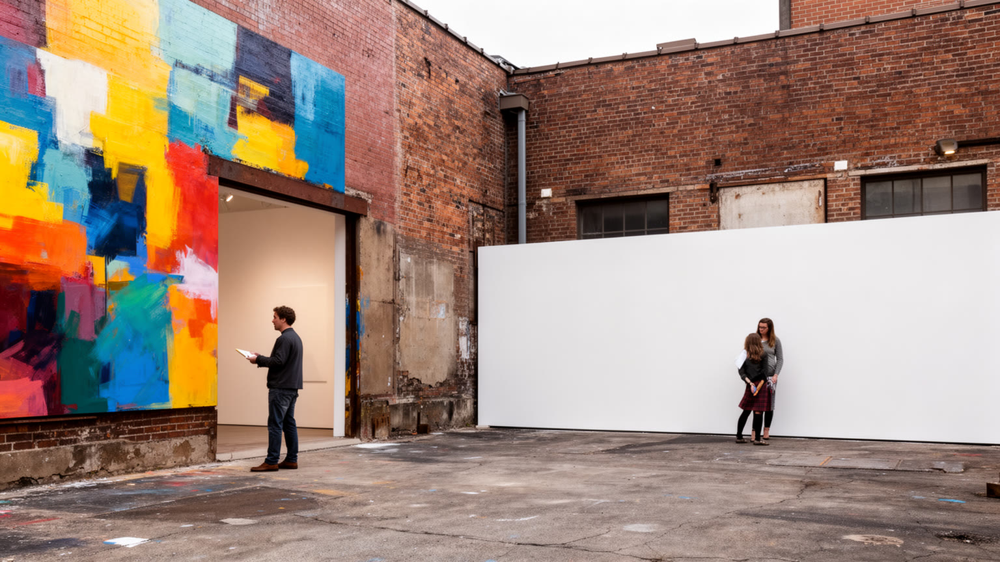
デトロイトの街角では、壁画、彫刻、ギャラリー、再利用された工場建築が、都市の傷と想像力を同時に見せる。空き地や倉庫の壁に描かれた作品は、単なる装飾ではなく、近隣の歴史、黒人文化、労働、音楽、喪失、抵抗を公共空間へ置く方法である。芸術家にとって、安い空間と工業建築の余白は制作の機会になったが、その魅力が外部資本を呼び、家賃上昇や住民の排除につながる危険もある。デトロイトの芸術を語るとき、荒廃を背景にした格好よさだけを消費する態度は避けたい。壁の前には、その地区で暮らし、店を開き、教会へ通い、学校へ行く人がいる。芸術は地域の声を広げる力を持つ一方、誰が描き、誰が許可し、誰が利益を得るのかという政治も伴う。ミュージアムの名画、公共壁画、ストリートアート、音楽イベント、若者の制作空間をつなげて見ると、デトロイトは単なるポスト工業の廃墟ではなく、表現を通じて自分を語り直す都市であることが分かる。学校や非営利のワークショップは、若者が街の歴史を自分の線で描く入口になる。観光客が写真を撮る場所も、住民には通勤路や買物路である。保存される壁と塗り替えられる壁の違いにも、地区の力関係が出る。絵の具の色は、壊れた壁を隠すだけではない。失われた仕事、残った家族、これからの誇りを、通りを歩く人の目に戻す。芸術は都市再生の飾りではなく、記憶の交渉の場でもある。
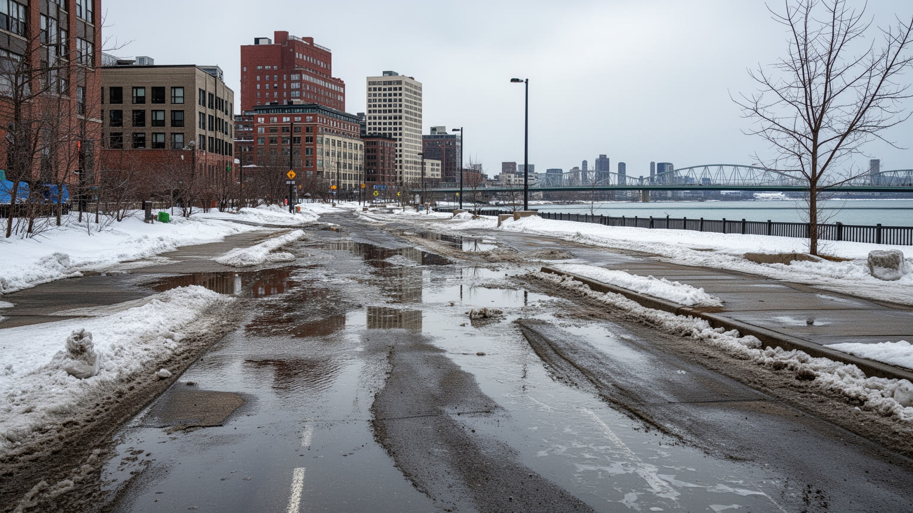
デトロイトの気候は、五大湖に近い内陸都市としての性格を持つ。冬は寒く、雪と凍結が道路、住宅、通勤、暖房費を重くする。夏は湿度が高く、雷雨や熱波があり、古い住宅や街路樹の少ない地区では暑さの負担が大きい。水はデトロイトの強みであり課題でもある。川と湖に近いことは水運、景観、飲料水、レクリエーションを支えるが、老朽化した水道、雨水排水、地下室の浸水、料金滞納、環境汚染は生活の不平等を映す。工業時代の汚染や河岸の改変は、水辺を長く市民から遠ざけた。近年は川辺の公園化や水質改善が進むものの、気候変動による豪雨や湖水位の変動は都市インフラを試している。冬の除雪が遅れれば高齢者や車を持たない人の移動は難しくなり、熱波では冷房のない世帯が危険にさらされる。気候は自然条件であると同時に、行政サービス、住宅の質、所得、交通が絡む社会問題である。飲料水への信頼は、近隣都市の危機も含めて地域の大きな関心事になっている。雪の日のバス停、凍った歩道、夏の停電は、気候が日々の移動と健康を左右することを示す。公園の樹木や雨水を吸う空き地は、小さな防災装置にもなる。デトロイトの水と気候を読むと、五大湖地域の豊かな資源が、誰に安全と快適さを与え、誰に負担を残すのかが見えてくる。川辺の美しい夕景と、雨上がりに水がたまる住宅街は、同じ都市の二つの顔である。
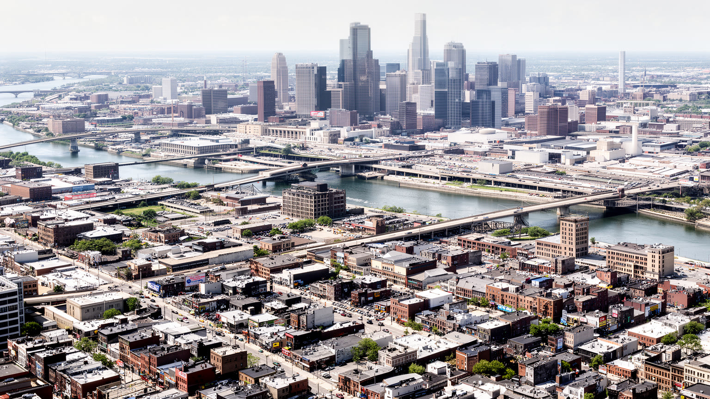
デトロイトを一つの物語に押し込めることは危うい。自動車王国、破綻都市、音楽の都、黒人都市、再生都市という呼び名はどれも一部を示すが、どれか一つだけでは街を誤解する。デトロイトの本質は、世界的な産業成功が生んだ富と、郊外化、人種差別、工場移転、自治体財政の危機が残した傷が、同じ街路に重なる点にある。川辺の再開発を歩けば投資の勢いが見えるが、バスで少し離れた街区では空き地、修理中の家、閉じた学校、教会の活動が見える。モータウンの歌は誇りを語り、組合の歴史は仕事の尊厳を語り、壁画は地区の記憶を語る。ここで大切なのは、廃墟を珍しがる視線でも、再生を無条件に祝う視線でもない。誰が残り、誰が戻り、誰が利益を得て、誰がまだ水道や交通や安全に苦しむのかを問う姿勢である。デトロイトは失敗の見本ではなく、二十世紀の工業都市が二十一世紀にどう生き直すかを示す実験場である。地図上の空白や新しい投資を、個々の家族の時間へ戻して考える必要がある。観光の短い滞在では、距離と交通の不便、地区ごとの格差を見落としやすい。産業、文化、住宅、国境を一緒に読むことで、都市の強さと弱さが同時に見える。傷は深いが、そこには修理する人、歌う人、交渉する人、家を守る人がいる。その人々の時間を見れば、デトロイトは終わった都市ではなく、読み続けるべき都市である。